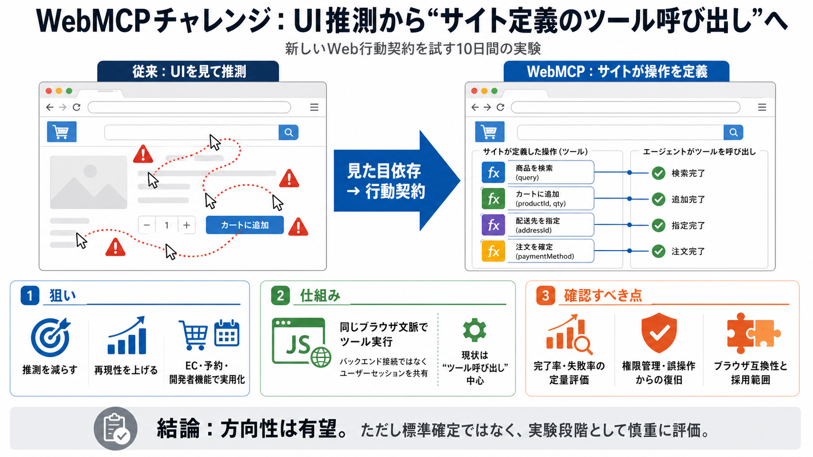

What Is WebMCP? Your Website's API for AI Agents | No Hacks
| Browser | WebMCP support (August 2026) | --- | | Google Chrome 149-156 | Public origin trial (opt-in, production-elig…

UIを見て推測する代わりに、サイトが用意した「呼び出し可能なツール」をエージェントが実行する――その方向性を確かめる試験的イベントです。
従来多くの自動化は、画面の見た目（UI）からクリック位置や手順を当てにいくため、失敗・不整合・再現性不足が起きやすくなります。
同じ意図でもUI変更で手順が崩れる。
EC・予約・開発者向け機能で特に厳しい。
WebMCPは、画面を読ませるのではなく「実行してよい操作」を名前付きの関数として渡し、エージェントがそれを呼び出して進めます（関数＝道案内）。
ボタン位置・順序を推定。
例：ツール名＋入力で実行。
ツール実行はバックエンド接続ではなく、同一のブラウザセッションで行う設計です。導入の摩擦を下げる一方、権限・安全性の設計が重要になります。
ユーザーセッションを共有して操作。
誤操作・不正利用・復旧を考慮。
主眼は、エージェントが「ページを見て手順を推測する」必要を減らし、サイトが公開する操作に基づいてタスクを完了することです。
クリック位置・順序を当てに行かない。
同一ツール呼び出しで結果を揃える。
EC/予約/機能連携に効く可能性。
現行は「呼び出し可能ツール」中心で、MCPのより広い要素（資源・プロンプト・サンプリング等）は含まれていません。期待が大きいほどギャップが出ます。
サイトが提示する関数を実行。
資源・プロンプト等の一括連携は未成熟。
OpenAI主導の「10日間のWebMCPチャレンジ」は、エージェントがWeb上で実行できる行動を、サイト側が明確に公開する流れを普及させるための試験です。
“サイト定義の操作”を増やす。
仕様完成の勝負より、実装意欲を測る色。
記事中の利点は主に「期待される効果」として提示されており、独立評価やベンチマークの結果は読み取れません。採用判断には追加の検証が必要です。
従来（UI推測）との比較が鍵。
誤操作時にどう戻すか。
対応ブラウザが均一ではないため、短期コンテストの結果をそのまま“標準の覇権”とは見なせません。動く範囲の違いが採用を左右します。
実利用の前提（互換性）が不足し得る。
各社がどこまでプロダクト化するか。
Chromium（Chrome系）、Cloudflare、Shopify、Vercel、Render、Netlifyなどが関与し、審査にも代表的な関係者が入っています。実装志向の強さが示唆されます。
ブラウザ・配信側の近さ。
実運用の価値領域。
導入経路を支える側。
UI推測から“行動契約”へ切り替える設計は有望です。ただし、効果の検証データと、安全性・権限管理・復旧の詳細が不足しています。
ツール呼び出しで手順ブレを減らす。
権限逸脱・誤操作復旧の設計度。
WebMCPチャレンジは、Webインターフェースが「人のクリック」から「構造化された行動」に移る可能性を示します。採用判断には、セキュリティ設計・互換性・定量評価を今後の公開結果で確認すべきです。
失敗率/完了率、安全性要件。
実験段階として段階的に評価。
※用語：WebMCP（Model Context ProtocolのWeb向け扱い）／ツール（サイトが公開する呼び出し可能な関数）— 日本語補助：呼び出し=ツール実行
| Browser | WebMCP support (August 2026) | --- | | Google Chrome 149-156 | Public origin trial (opt-in, production-elig…
Alexandra Klepper Published: May 18, 2026, Last updated: August 7, 2026 WebMCP is a proposed web standard to help you …
• More AI agents and platforms (like ChatGPT, Claude, Gemini, Copilot) are expected to add WebMCP support as the …
Industry observers expect formal browser announcements by mid-to-late 2026, with Google Cloud Next and Google I/O as pro…
### Tools ### Company ### Legal © 2026 DEVELOPERS DIGEST ## DEVDIGEST [...] | Source | Description | --- | | WebMCP…